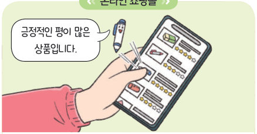
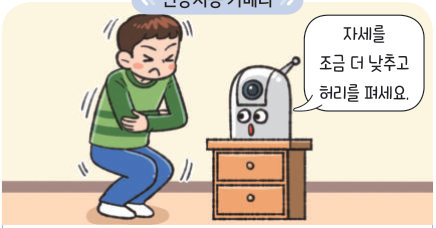
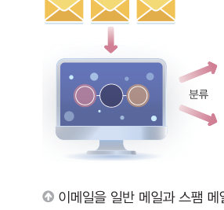

인공지능은 데이터로 배운다. 메일에 직접 레이블을 붙여 보고, 분류·회귀·군집을 움직여 본 뒤, 교과서의 바른 자세 사진으로 모델을 직접 학습시키고 평가해 보자. 데이터의 양과 질이 성능을 어떻게 바꾸는지도 실험해 보자.
🎯 학습 목표 — 학습에 필요한 데이터를 수집하여 분류하고, 인공지능 문제 해결 과정을 살펴보며 데이터의 중요성을 설명할 수 있다.
1. 인공지능에서 데이터의 역할데이터는 인공지능이 제 역할을 하도록 하는 재료 170쪽
사람이 경험을 통해 대상을 인식하고 결과를 예측하는 것처럼 인공지능은 데이터 학습을 통해 대상을 인식하고 결과를 예측한다. 많은 양의 데이터로 학습을 반복하면 인공지능의 성능이 점차 개선되며, 이때 데이터는 인공지능이 제 역할을 하도록 하는 재료가 된다. 인공지능은 사람보다 많은 양의 학습 데이터를 필요로 한다.
170쪽㉠ 인공지능 카메라

170쪽㉡ 온라인 쇼핑몰170쪽㉢ 인공지능 스피커

170쪽㉣ 로봇 청소기
1[그림 Ⅳ-3] 생활 속 인공지능이 학습한 데이터를 골라 보자.
㉠ “자세를 조금 더 낮추고 허리를 펴세요.”
㉡ “긍정적인 평이 많은 상품입니다.”
㉢ “오늘은 낮 한때 비가 오겠습니다.”
㉣ “양말이 앞에 있습니다. 양말을 치워 주세요.”
2. 데이터의 수집과 분류레이블링 — 일반 메일과 스팸 메일 171쪽
➊ 데이터 수집 인공지능의 학습 데이터는 카메라나 마이크 등을 통해 직접 수집하거나, 미리 생성해 둔 데이터를 공유하는 웹 사이트, 검색 엔진을 통해 수집할 수 있다. ➋ 데이터 분류 수집한 각각의 데이터가 어떤 결과를 예측하는 데 사용되는 데이터인지 레이블링 작업을 한다. 그리고 학습에 사용할 훈련 데이터와 학습이 잘 되었는지 평가할 때 사용할 테스트 데이터로 분류한다. 이때 테스트 데이터는 훈련 데이터와 명확히 구분해야 한다.
레이블링 데이터에 부여되는 특정한 태그 또는 정답을 레이블이라고 하며, 인공지능 모델을 생성할 때 인공지능이 예측하게 되는 결괏값을 의미한다. 이러한 레이블을 부여하는 과정을 레이블링이라고 한다.

171쪽이메일을 일반 메일과 스팸 메일로 레이블링
1직접 레이블을 붙여 보자.
[수행평가 안내] 다음 주 정보 수업 준비물
★축★ 당첨! 지금 바로 클릭하면 현금 100만 원 지급
엄마: 오늘 저녁 7시에 같이 밥 먹자
(광고) 무료 게임 아이템 받기 ▶▶ 링크 클릭
도서관 대출 도서 반납일 안내
계정이 정지됩니다. 비밀번호를 이 주소에 입력하세요
2학습에 사용한 데이터를 이용하여 인공지능 모델을 평가하면 . 테스트 데이터로 결과를 제대로 예측하지 못하면 .
3. 인공지능으로 해결할 수 있는 문제분류 · 회귀 · 군집 172쪽
분류(classification)는 입력 데이터가 미리 정의된 범주 중 어느 것에 속하는지 결정하는 것을 말한다. 회귀(regression)는 입력 데이터에 따른 수치 형태의 결괏값을 예상하는 것이고, 군집(clustering)은 입력 데이터를 유사한 것끼리 모아 동일 집단으로 만드는 것을 뜻한다.
1해 보기 다음 문제를 해결할 때 사용할 수 있는 방법을 골라 보자.
광고비의 지출에 따른 물건 판매량을 예상한다.
영화 감상평을 분석하여 긍정과 부정을 파악한다.
동영상 시청 기록 정보로 비슷한 성향의 사람들을 묶어 새로운 동영상을 추천한다.
이메일을 일반 메일과 스팸 메일로 나눈다.
기온에 따른 아이스크림 판매량을 예측한다.
2‘고요 속의 외침’처럼 단어를 입 모양으로 표현하면 컴퓨터가 맞추는 게임에는 이(가) 알맞다. 입 모양이 미리 정한 여러 단어 중 어느 범주에 해당하는지 결정해야 하기 때문이다.
4. 인공지능을 활용한 문제 해결 과정바른 자세 유지 시스템 — 데이터 수집 → 모델 생성 및 평가 → 모델 활용 173~174쪽
인공지능을 활용하여 문제를 해결할 때에는 데이터 수집, 모델 생성 및 평가, 모델 활용의 과정을 거친다. 바른 자세 유지 시스템을 만들기 위해 사람이 의자에 앉아 있는 이미지 데이터를 수집하고, 바른 자세와 바르지 못한 자세로 레이블링한 후 훈련 데이터와 테스트 데이터로 분류한다. 수집한 데이터로 모델을 학습시키고, 학습에 사용하지 않은 테스트 데이터로 모델이 정확하게 인식하는지 평가한다.
인공지능 모델 데이터에서 패턴을 학습하고 이를 바탕으로 예측 또는 결정하는 프로그램 · 교과서는 티처블 머신(포즈 프로젝트)을 쓰지만, 여기서는 교과서 데이터로 브라우저 안에서 바로 학습하는 작은 모델을 써요. 이 모델은 새 사진을 가장 비슷한 훈련 사진의 레이블로 분류해요.
1문제 해결 과정의 각 단계에서 하는 일을 연결해 보자.
데이터 수집
모델 생성 및 평가
모델 활용
2위 실험실에서 모델을 학습시키고 테스트 데이터로 평가해 보자. 그다음 ‘레이블이 잘못된 데이터 섞기’를 켜고 다시 학습·평가하여 정확도를 비교해 보자.
평가 기록이 여기에 쌓여요.
5. 인공지능 학습에서 데이터의 중요성데이터의 양과 질 175쪽
많은 양의 정확한 데이터로 학습하였다면 우수한 성능의 인공지능을 생성할 가능성이 높지만, 양이 적고 정확하지 않은 데이터로 학습한 인공지능은 정확한 결과를 산출할 수 없다.
바른 자세 데이터로 실험해요. 처음 한 번은 특징을 계산하느라 조금 걸려요.
1훈련 데이터를 클래스마다 1~2 개만 쓰면 평균 정확도가 . 훈련 데이터를 늘리면 정확도가 대체로 .
2‘바른 자세’ 클래스에 바르지 못한 자세 사진이 섞여 있다면 모델의 성능은 . 인공지능 모델의 성능은 학습 데이터의 에 크게 영향을 받는다.
지식 충전소 — 인공지능으로 복원한 독립운동가 인공지능 딥페이크 기술은 실존했던 인물의 얼굴이나 목소리를 사실적으로 재현해, 역사적 사건에 대한 관심과 이해를 높이는 데 쓰일 수 있다. (175쪽)
해 보기 · 개별인공지능 모델 만들기 — 건물 안 운동화 판별하기 176쪽
건물 안에서 운동화를 신고 다니면 실내가 더러워지므로 깨끗한 환경을 위하여 실내화 신기를 권장한다. 건물 안에서 운동화를 신고 다니는 학생이 있으면 자동으로 신호를 출력해 주는 인공지능 모델을 만들어 보자.
테스트 사진을 누르면 신호가 나와요.
1이 문제의 데이터 레이블은 이고, 훈련 데이터는 클래스마다 개, 테스트 데이터는 클래스마다 개이다.
2모델의 정확도와, 틀린 사진이 있다면 왜 틀렸을지 써 보자.
3모델의 성능이 좋지 않다면 어떻게 개선할 수 있을지 써 보자(📷 카메라로 직접 데이터를 추가해 봐도 좋아요).
정리하기 · 핵심 콕콕인공지능과 학습 165~177쪽
1인공지능의 개념과 특성
(은)는 인간이 하는 인식, 판단 등의 지능적 기능을 컴퓨팅 시스템이 수행할 수 있도록 하는 소프트웨어이다. 인공지능은 상황 인식 및 이해, 학습, 최적화, 예측, 의 특성을 지닌다.
2데이터의 수집과 분류
수집한 데이터는 학습에 사용할 데이터와 학습이 잘 되었는지 평가할 때 사용할 데이터로 구분할 수 있다.
3인공지능을 활용한 문제 해결 과정
인공지능은 분류, 회귀, 군집 등의 문제를 해결하는 데 활용된다. 데이터 수집 → 모델 생성 및 평가 → 의 과정을 거친다.
평가 기준
스스로 평가
인공지능 소양 인공지능의 개념과 특성을 설명할 수 있는가?
인공지능과 인공지능이 아닌 소프트웨어를 구별할 수 있는가?
인공지능 학습에서 데이터의 중요성을 설명할 수 있는가?
인공지능 학습에 필요한 데이터를 수집하여 관리할 수 있는가?
제출학생 정보 · 제출하기
모든 활동을 마친 뒤 제출하면 전체가 한 번에 채점되고 피드백이 나타나요. 학년을 꼭 적어 주세요 — 답안은 선생님 스프레드시트(내 학년 시트의 정보 탭)에 기록돼요.